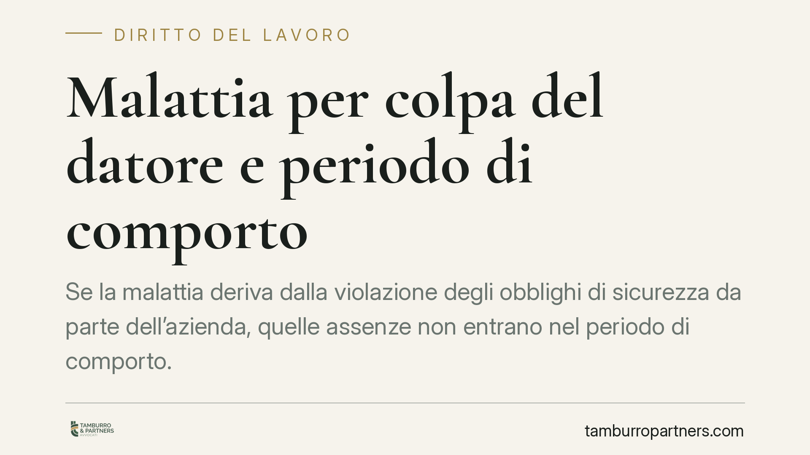

Malattia per colpa del datore e periodo di comporto
Se la malattia deriva dalla violazione degli obblighi di sicurezza da parte dell'azienda, quelle assenze non entrano nel periodo di comporto. La Sezione Lavoro della Cassazione lo ha ribadito in più occasioni: il datore non può licenziare per superamento del comporto quando è lui stesso all'origine dell'infermità. Ma l'onere di provarlo grava sul lavoratore.

Il caso
Il periodo di comporto è l'arco temporale entro cui il lavoratore assente per malattia conserva il posto. Superata quella soglia, il datore può recedere dal rapporto. La domanda è antica: se la malattia è provocata proprio dal datore, quelle assenze vanno comunque conteggiate?
Secondo un orientamento consolidato della Sezione Lavoro della Cassazione, la risposta è negativa. Le assenze riconducibili a una condotta illecita dell'azienda non concorrono a formare il comporto. Diversamente, il datore trarrebbe vantaggio dal proprio inadempimento, arrivando a licenziare per un'infermità che lui stesso ha causato.
Inquadramento normativo
Due norme del codice civile reggono la materia.
L'art. 2110 c.c. è la base del periodo di comporto: prevede che, in caso di malattia, il lavoratore abbia diritto alla conservazione del posto per il tempo stabilito dalla legge, dai contratti collettivi o dagli usi. Solo il superamento di quel limite legittima il recesso.
L'art. 2087 c.c. è la norma di chiusura del sistema di sicurezza sul lavoro: impone al datore di adottare tutte le misure che, secondo la particolarità del lavoro, l'esperienza e la tecnica, siano necessarie a tutelare l'integrità fisica e la personalità morale del dipendente. È una clausola generale che integra e completa la normativa antinfortunistica specifica.
La lettura combinata dei due articoli produce il principio: quando la malattia nasce dalla violazione dell'art. 2087 c.c., le relative assenze non possono essere imputate al lavoratore ai fini dell'art. 2110 c.c. La Cassazione ha applicato questo criterio in diverse pronunce della Sezione Lavoro, delineando un indirizzo stabile.
Implicazioni pratiche
Il punto delicato è l'onere della prova, che resta a carico del lavoratore.
Non basta affermare che la malattia dipende dal lavoro. Occorre dimostrare tre elementi: la violazione di uno specifico obbligo di sicurezza; il danno alla salute (l'infermità che ha generato le assenze); il nesso causale tra la condotta del datore e quella infermità.
Si tratta di una prova tecnica, spesso affidata a documentazione medica e a consulenza specialistica. Le mansioni usuranti, l'esposizione a sostanze nocive, i ritmi eccessivi, il mancato rispetto delle norme antinfortunistiche o situazioni di stress lavoro-correlato sono i terreni tipici del contenzioso.
Per il datore, il rischio è duplice: da un lato l'illegittimità del licenziamento intimato per superamento del comporto; dall'altro l'eventuale responsabilità risarcitoria per il danno alla salute. La corretta gestione documentale delle misure di prevenzione diventa quindi decisiva anche in chiave difensiva.
Cosa fare in concreto
- Documentate l'origine della malattia: raccogliete certificati, cartelle cliniche e ogni referto che colleghi l'infermità alle condizioni di lavoro. Senza prova del nesso causale, la tutela non opera.
- Ricostruite gli obblighi violati: individuate la norma di sicurezza disattesa (documento di valutazione dei rischi, dispositivi di protezione, misure organizzative) e conservate segnalazioni, e-mail e comunicazioni.
- Verificate i termini di impugnazione: il licenziamento va contestato per iscritto entro 60 giorni dalla comunicazione (impugnazione stragiudiziale); segue il deposito del ricorso o la comunicazione della richiesta di conciliazione entro i successivi 180 giorni, a pena di decadenza (art. 6 L. 604/1966).
- Valutate l'azione risarcitoria: la violazione dell'art. 2087 c.c. può fondare, oltre all'impugnazione del licenziamento, una domanda autonoma per il danno alla salute.
- Datori: aggiornate la valutazione dei rischi: una gestione documentata delle misure di prevenzione riduce sia il rischio di infortunio sia quello di soccombenza in giudizio.
Un equilibrio da presidiare
Il principio non ribalta il sistema: il comporto resta uno strumento legittimo di gestione dell'assenza prolungata. Ciò che la Cassazione esclude è che il datore possa avvantaggiarsi di una malattia da lui provocata. È un punto di equilibrio tra il potere di recesso e il dovere di sicurezza, che si regge interamente sulla capacità di provare il collegamento tra condotta e infermità. Senza quella prova, le assenze tornano a pesare come qualsiasi altra malattia.
---
Contributo informativo a cura di Tamburro & Partners - Avv. Giuseppe Tamburro. Non costituisce parere legale.
Ogni storia di lavoro ha i suoi tempi.
Se gestisci HR e vuoi un confronto su contenzioso, ispezioni o licenziamenti, scrivi allo studio. Ti rispondiamo entro un giorno lavorativo.